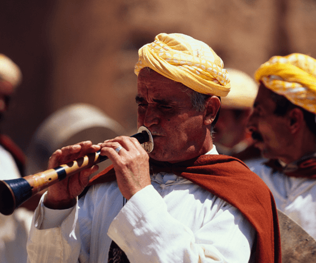
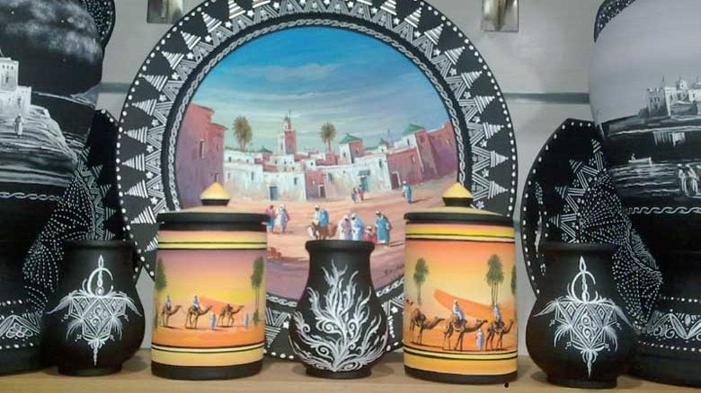

Traditions Vivantes
Découvrez les coutumes ancestrales toujours pratiquées

Artisanat Local
Un savoir-faire transmis de génération en génération

Gastronomie
Savourez les spécialités culinaires de la région
Fondation de la ville par Ziri ibn Atia, chef de la tribu des Zénètes
Développement sous les Almohades avec la construction des remparts
Période de prospérité commerciale et culturelle

Découvrez les coutumes ancestrales toujours pratiquées

Un savoir-faire transmis de génération en génération
Savourez les spécialités culinaires de la région
Festival de la musique gharnatie
Festival des arts populaires
Moussem de Sidi Yahya
Une ville universitaire dynamique
Un pôle économique en plein essor
Une destination touristique émergente